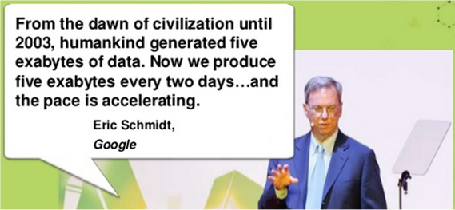
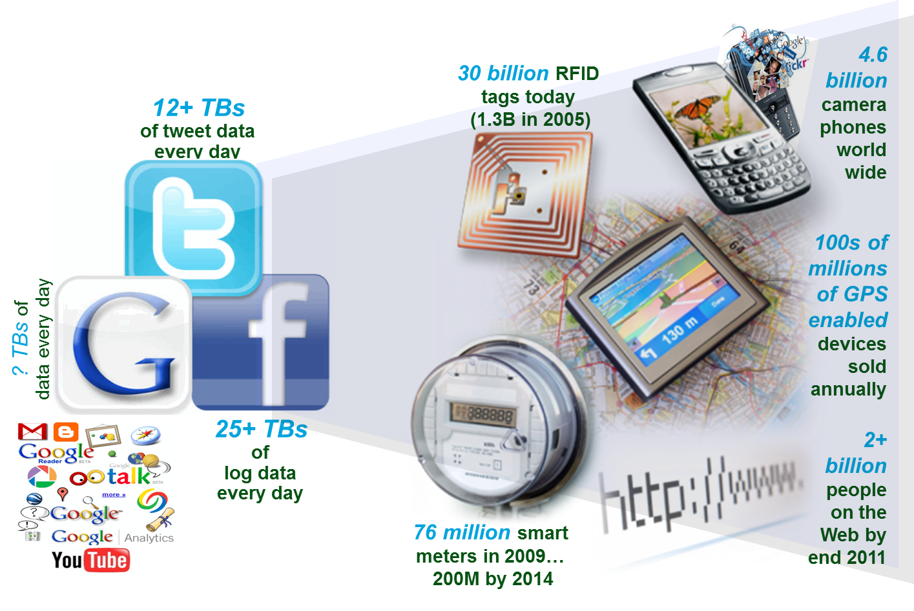

The rapid acceleration of computing power—driven by advances in hardware, cloud infrastructure, and parallel processing—has enabled modern analytics and machine learning to scale to massive datasets.
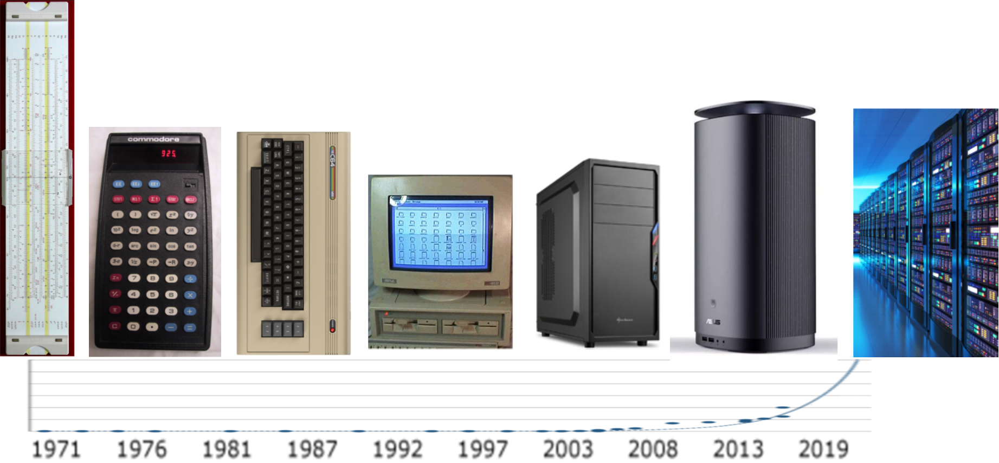
 Traditional Regression
Traditional Regression
 Decision Tree
Decision Tree
 Neural Network
Neural Network
ImageNet is a large-scale image recognition competition where models compete to classify millions of images across thousands of categories. Breakthrough models have historically demonstrated major advances in deep learning.: Models vs Human Baseline
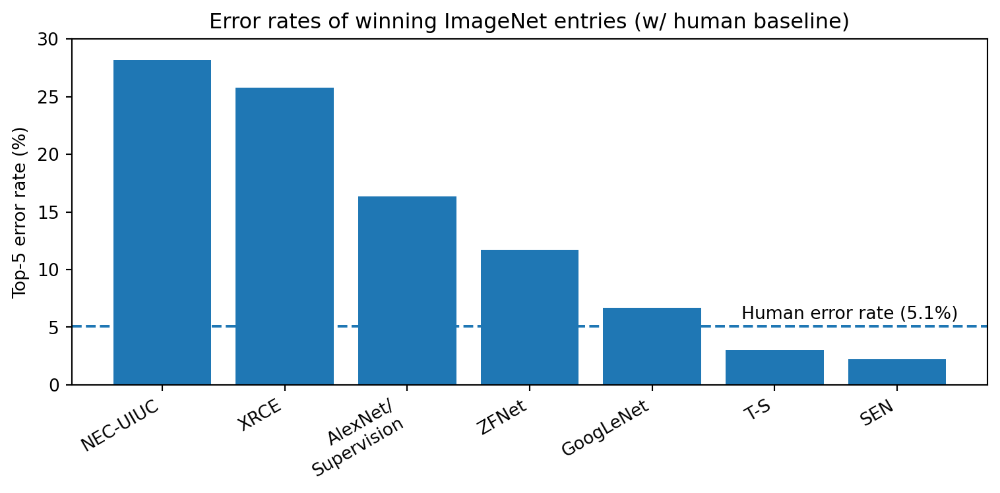
Traditional Analytics Process:
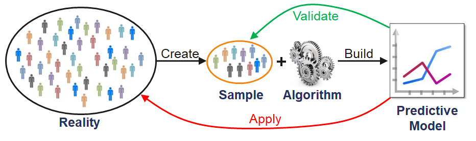
Modern Analytics Process:
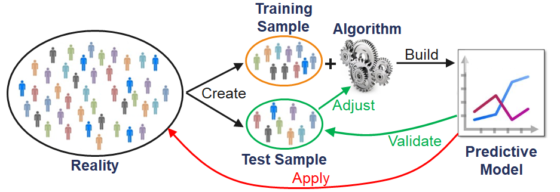
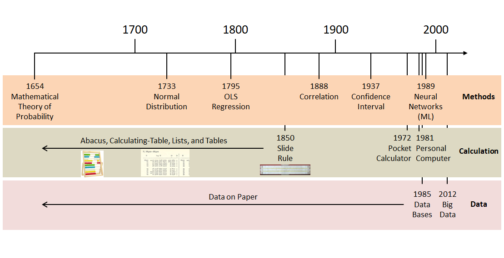
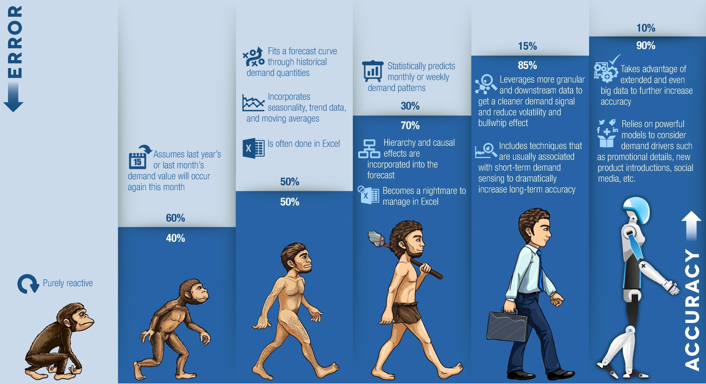
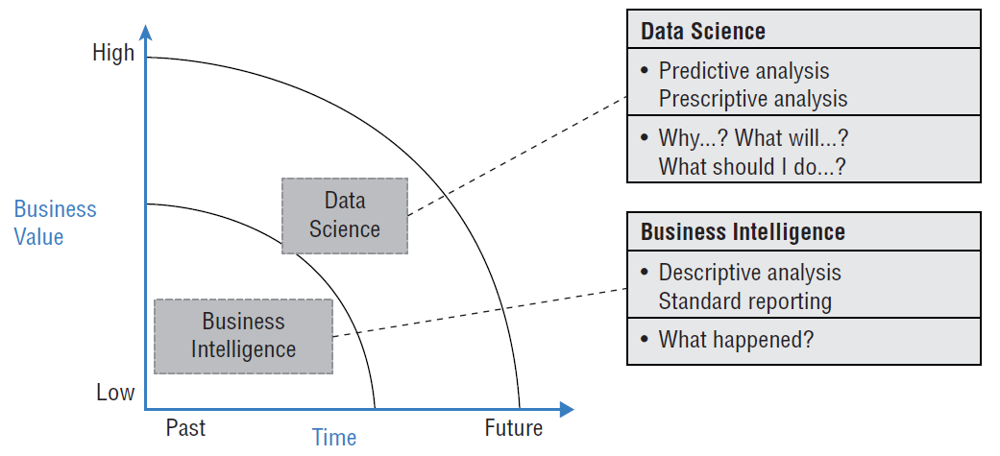
Descriptive
Predictive
Prescriptive
| What happened? (descriptive / BI) | What will happen? (predictive analytics) | What should I do? (prescriptive analytics) |
|---|---|---|
| How many widgets did I sell last month? | How many widgets will I sell next month? | Order 5,000 units of Component Z to support widget sales for next month. |
| What were sales by zip code for Christmas last year? | What will be sales by zip code over this Christmas season? | Hire Y new sales reps by these zip codes to handle projected Christmas sales. |
| How many of Product X were returned last month? | How many of Product X will be returned next month? | Set aside $125K in financial reserve to cover Product X returns. |
| What were company revenues and profits for the past quarter? | What are projected company revenues and profits for next quarter? | Sell the following product mix to achieve quarterly revenue and margin goals. |
| How many employees did I hire last year? | How many employees will I need to hire next year? | Increase hiring pipeline by 35% to achieve hiring goals. |
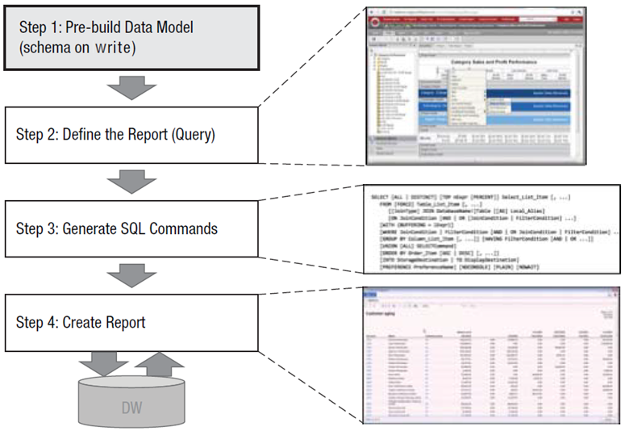
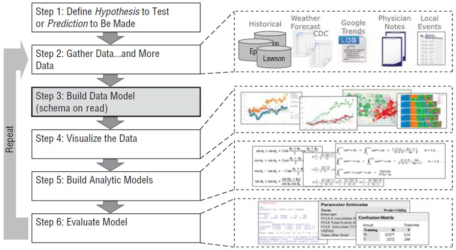
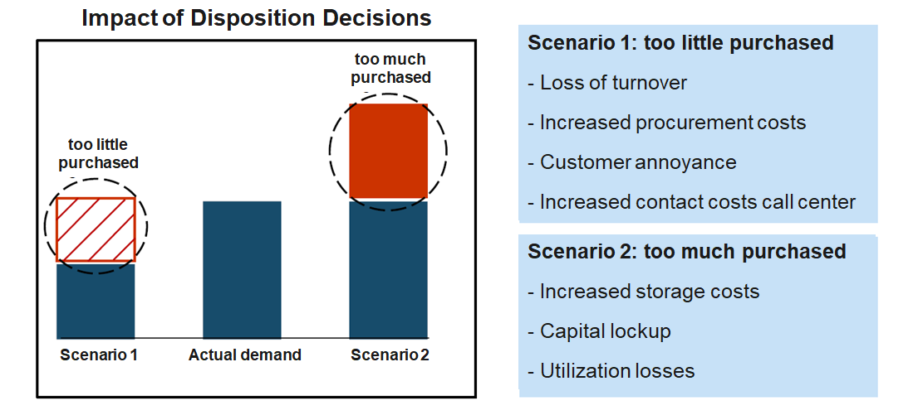
On the basis of more than 300 million data records per week, Otto makes more than one billion forecasts per year on the sales development of individual articles for the next days and weeks. Such forecasts allow Otto to reduce its own inventories by up to 30% on average.
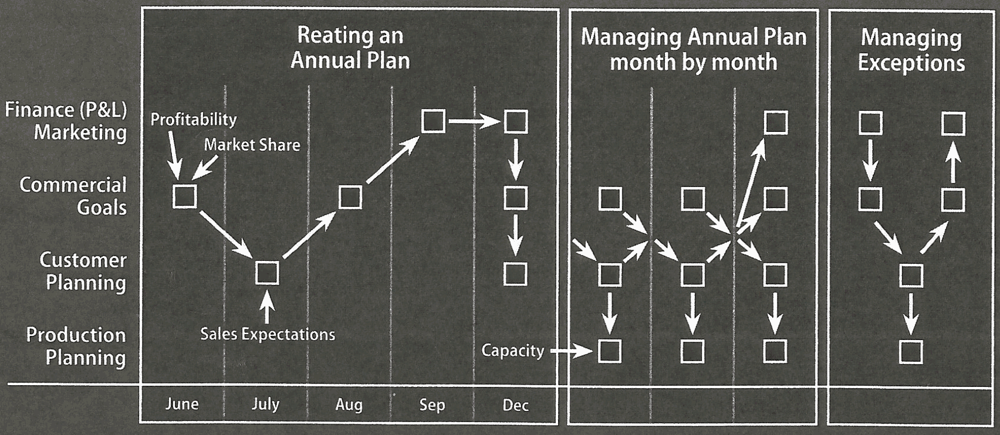
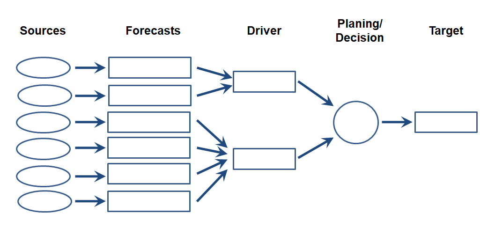
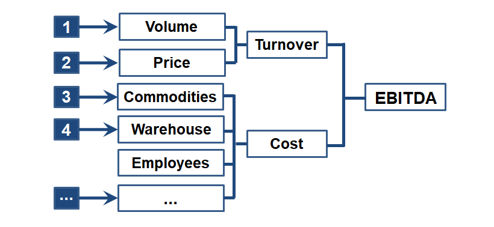
Social media as a driver of data